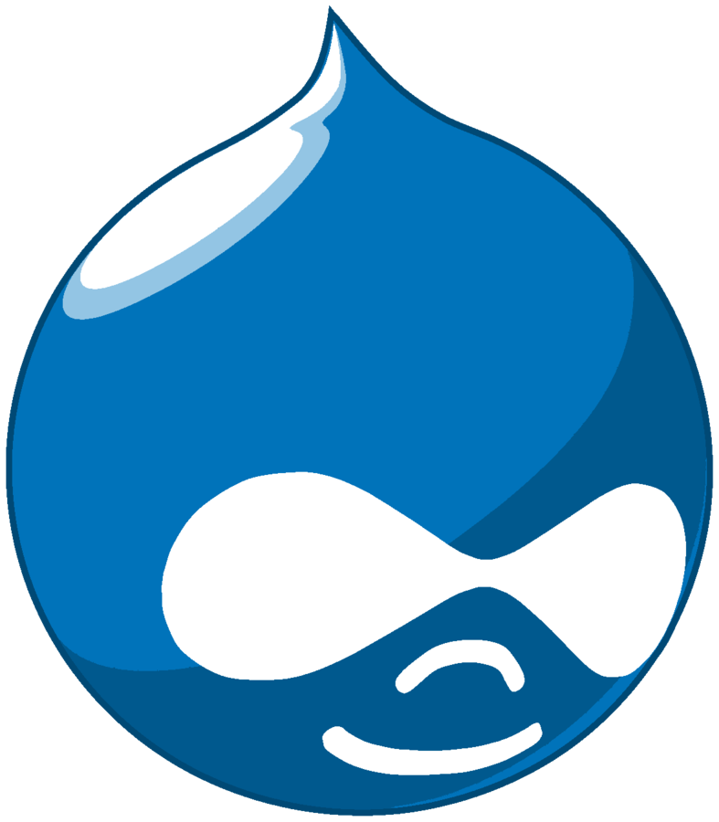

Drupal & Symfony
Des tests fonctionnels avec Behat !
Romain Moro
Développeur PHP/Drupal
 @c4ilus
@c4ilus
 https://www.drupal.org/user/2944853

Pourquoi les tests ?
Pourquoi les tests ?
- Application robuste
- Satisfaction de l'équipe
- Satisfaction du client
Pourquoi les tests ?
Tests Unitaires (au niveau du code) - Scénarios simples
Test sur les fonctions/méthodes (entrée => sortie)
PHPUnit, Lime, Unittest, Cunit, Cppunit ...
Tests Fonctionnels (utilisateur final) - Scénarios complexes
Pourquoi les tests ?
Définition et principes d'un test fonctionnel.
Lorsque nous parlons de « tests fonctionnels »,
entendons « tester l’interface de l’application ».
Mise en cache, Affichage d'un élément (h1, bloc, menu ...), Connexion ...
Nombreux cas de figure / jeux de tests
Automatiser des tests qui pourraient être faits par un humain.
Pourquoi les tests ?


Pourquoi les tests ?
La méthodologie du "Behavior Driven Development"
- Méthode Agile
- Collaboration entre les acteurs d'un projet logiciel
- Mise en avant des interactions et du langage naturel dans le processus de développement
- Pourquoi le code doit-être crée ?
Pourquoi les tests ?
La méthodologie du "Behavior Driven Development"
- Utilisation d'exemples pour décrire la demande
- Mise en avant des interactions et du langage naturel dans le processus de développement
- Différencier les résultats attendus de l'exécution d'un code en fonction d'effets secondaires d'autres éléments de ce code (effets de bord)
L'outil Behat
Présentation
- Framework PHP de BDD
- Écrire des tests dans un langage compréhensible
- Open Source
- First release : Septembre 2010
- Version 3.0.12
L'outil Behat
Présentation
Gherkin- Ecrire des instructions dans un langage humain
- 1 instruction => 1 fonction PHP.
L'outil Behat
Présentation
Mink- Connecter Behat avec des outils d'émulation de navigateurs.
- Simuler les interaction avec le navigateur (Selenium)
L'outil Behat
Source : http://blog.eleven-labs.com/fr/behat-structurez-vos-tests-fonctionnels/L'outil Behat
Installation - Prérequis
Installer- Composer : https://getcomposer.org/
- php-curl :
sudo apt-get install php5-curl / php7.0-curl - Selenium : http://docs.seleniumhq.org/download/
- Google Chrome driver :
sudo apt-get install chromium-chromedriver
L'outil Behat
Installation - Prérequis
Lancer le server selenium (en précisant d'utiliser le chrome driver) ...java -jar selenium-server-standalone-2.49.1.jar -Dwebdriver.chrome.driver=/usr/lib/chromium-browser/chromedriver
L'outil Behat
Installation
Créer le dossier (hors du www)mkdir tests && cd tests
L'outil Behat
Installation
Installer behat, symfony2-extension et drupal-extension avec composercomposer require behat/behatcomposer require behat/minkcomposer require behat/mink-selenium2-drivercomposer require behat/mink-extensioncomposer require symfony2-extensioncomposer require drupal/drupal-extension:~3.0
L'outil Behat
Initialisation
vendor/bin/behat --init
- création du dossier features (contenant nos futur scénarios)
- création du dossier features/bootstrap permettant de créer nos propres vocabulaires
L'outil Behat
Configuration (symfony) - /tests/behat.yml
L'outil Behat
Configuration (symfony) - /tests/behat.yml
L'outil Behat
Création de notre première feature
cd features/first.feature
L'outil Behat
Exécution
vendor/bin/behat/features/first.featureEt on croise les doits ....
L'outil Behat
Résultat
Ressources
- Behat: http://docs.behat.org/en/v3.0/
- Behat (packagist): https://packagist.org/packages/behat/behat
- Drupal extension: https://packagist.org/packages/drupal/drupal-extension
- Behat et symfony 2 [FR]: http://blog.eleven-labs.com/fr/behat-structurez-vos-tests-fonctionnels/
- Behat et Drupal [EN]: https://www.phparch.com/2016/08/testing-your-drupal-site-with-behat/